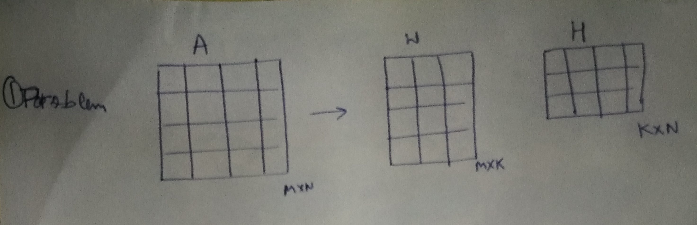
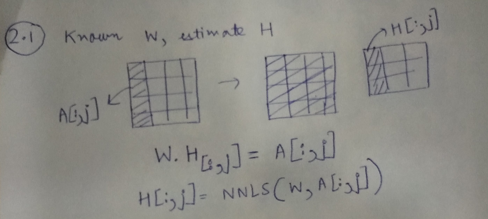
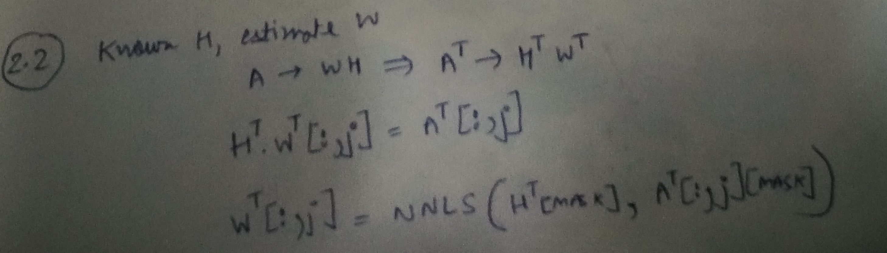

In this post, I will write about using non-negative least squares (NNLS) for the problem of non-negative matrix factorisation (NNMF). We often encounter such matrices in the problem of collaborative filtering.
Our goal is given a matrix A, decompose it into two non-negative factors, as follows:
$ A_{M \times N} \approx W_{M \times K} \times H_{K \times N} $, such that $ W_{M \times K} \ge 0$ and $ H_{K \times N} \ge 0$

Our solution consists of two steps. First, we fix W and learn H, given A. Next, we fix H and learn W, given A. We repeat this procedure iteratively. Fixing one variable and learning the other (in this setting) is popularly known as alternating least squares, as the problem is reduced to a least squares problem. However, an important thing to note is that since we want to constraint W and H to be non-negative, we us NNLS instead of least squares.

Using the illustration above, we can learn each column of H, using the corresponding column from A and the matrix W.
$$ \begin{equation}H[:, j] = NNLS (W, A[:,j]) \end{equation} $$
In the problem of collaborative filtering, A is usually the user-item matrix and it has a lot of missing entries. These missing entries correspond to user who have not rated items. We can modify our formulation to account for these missing entries.
Consider that $M' \le M$ entries in A have observed data, we would now modify the above equation as:
$$ \begin{equation}H[:, j] = NNLS (W [mask], A[:,j][mask]) \end{equation} $$
where, the mask is found by considering only the $M'$ entries.

We follow similar procedure. What must be noted is that to get our matrices in the form that NNLLS accepts, I started with A^T instead of A.
I'll now present a simple code example to illustrate the procedure.
import numpy as np
import pandas as pd
M, N = 20, 10
np.random.seed(0)
A_orig = np.abs(np.random.uniform(low=0.0, high=1.0, size=(M,N)))
pd.DataFrame(A_orig).head()
A = A_orig.copy()
A[0, 0] = np.NAN
A[3, 1] = np.NAN
A[6, 3] = np.NAN
A_df = pd.DataFrame(A)
A_df.head()
K = 4
W = np.abs(np.random.uniform(low=0, high=1, size=(M, K)))
H = np.abs(np.random.uniform(low=0, high=1, size=(K, N)))
W = np.divide(W, K*W.max())
H = np.divide(H, K*H.max())
pd.DataFrame(W).head()
pd.DataFrame(H).head()
def cost(A, W, H):
from numpy import linalg
WH = np.dot(W, H)
A_WH = A-WH
return linalg.norm(A_WH, 'fro')
However, since A has missing entries, we have to define the cost in terms of the entries present in A
def cost(A, W, H):
from numpy import linalg
mask = pd.DataFrame(A).notnull().values
WH = np.dot(W, H)
WH_mask = WH[mask]
A_mask = A[mask]
A_WH_mask = A_mask-WH_mask
# Since now A_WH_mask is a vector, we use L2 instead of Frobenius norm for matrix
return linalg.norm(A_WH_mask, 2)
Let us just try to see the cost of the initial set of values of W and H we randomly assigned.
cost(A, W, H)
num_iter = 1000
num_display_cost = max(int(num_iter/10), 1)
from scipy.optimize import nnls
for i in range(num_iter):
if i%2 ==0:
# Learn H, given A and W
for j in range(N):
mask_rows = pd.Series(A[:,j]).notnull()
H[:,j] = nnls(W[mask_rows], A[:,j][mask_rows])[0]
else:
for j in range(M):
mask_rows = pd.Series(A[j,:]).notnull()
W[j,:] = nnls(H.transpose()[mask_rows], A[j,:][mask_rows])[0]
WH = np.dot(W, H)
c = cost(A, W, H)
if i%num_display_cost==0:
print i, c
A_pred = pd.DataFrame(np.dot(W, H))
A_pred.head()
Let's view the values of the masked entries.
A_pred.values[~pd.DataFrame(A).notnull().values]
Original values were:
A_orig[~pd.DataFrame(A).notnull().values]
There you go, we are able to get recover A using a lower ranked decomposition consisting of non-negative terms only.